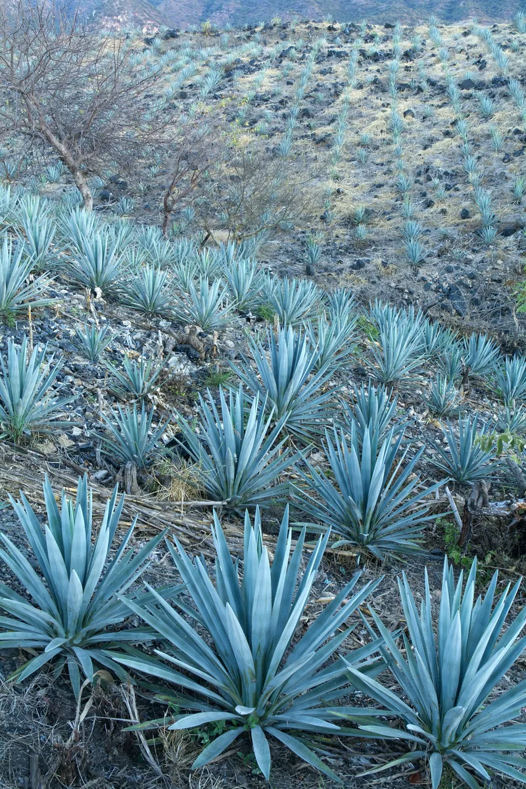

Our story
From my abuela's kitchen in Oaxaca to a corner of East London.
I grew up grinding corn for tortillas before school. When I moved to London, I couldn't find food that tasted like home, so in 2019 I built a tiny counter with one comal and a trompo.
Today we nixtamalise heirloom corn every morning, work with twelve family-run mezcal palenques, and still make the mole the way my grandmother taught me: slowly, with thirty ingredients and a lot of love.
- Heirloom corn varieties
- 4
- Family palenques
- 12
- Hours for our mole
- 48